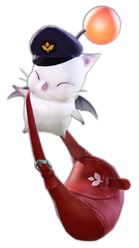

Why Make a FFXIV Guide?
I made this guide to help people learn from my mistakes. It was a massive learning curve for me when I first started, and I often would freeze up when queuing for a dungeon or trial. This is known in the community as "Tank Anxiety," it's a significant issue in player growth and potentially player retention. The game does have tooltips and a short novice tutorial on roles, guildheist, and mentors, but it only covers a fraction of what is needed to play correctly.
I believe that talking more about less-known facts can fill the gaps in knowledge so that new players can enjoy the game and make their party members' experiences more enjoyable.
Yes, the game shouldn't be taken too seriously, but I want people to feel excited when mastering a class. Imagine knowing every possible situation and making your party members less stressed when you adjust appropriately to their weak spots. Build trust, and your party members can lean on you for support.
What are my qualifications?
I've been playing FFXIV since I was 15 and have over 5000 hours in the game. Most of my hours are spent playing on Warrior and the rest on other tanks. I have every class leveled and know what they're looking for in a given situation. Also, I have done extreme and savage content. I have yet to do ultimates, but that isn't an issue for this guide. Ultimates are done by 2-5% of the community, and most new players will never even touch savage. All this to say, I know what is needed in this game from experience, and I can confidently guide new players.
Other Great Guides!
These warrior guides were my go-to for learning how to play, and they are well-written and easy to follow; why not check them out too?
https://www.thebalanceffxiv.com/jobs/tanks/warrior/https://www.icy-veins.com/ffxiv/warrior-guide